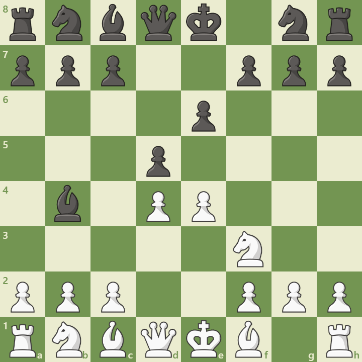

Overview
The Winawer Variation is a sharp line in the French Defense, beginning with:
1. e4 e6 2. d4 d5 3. Nc3 Bb4
Black immediately challenges White’s center and prepares to double pawns on c3, leading to imbalanced positions.
Opening Diagram
This position arises after 3...Bb4, pinning the knight and provoking structural weaknesses.
Main Variations
- Poisoned Pawn: ...Qxg2 – tactical complications
- Advance Variation: a3, b4 – space grabbing
- Petrosian Variation: a3, Bd2 – solid development
Strategic Themes
- Imbalanced pawn structures
- Counterplay on dark squares
- Long-term pressure on c3 and d4